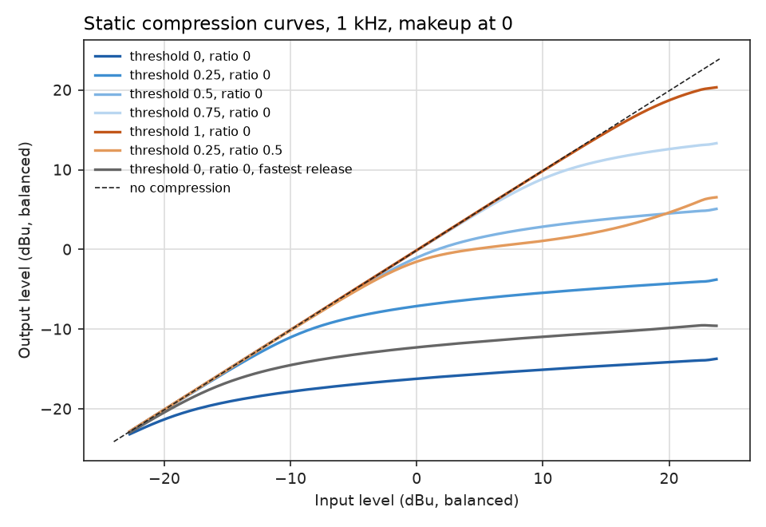
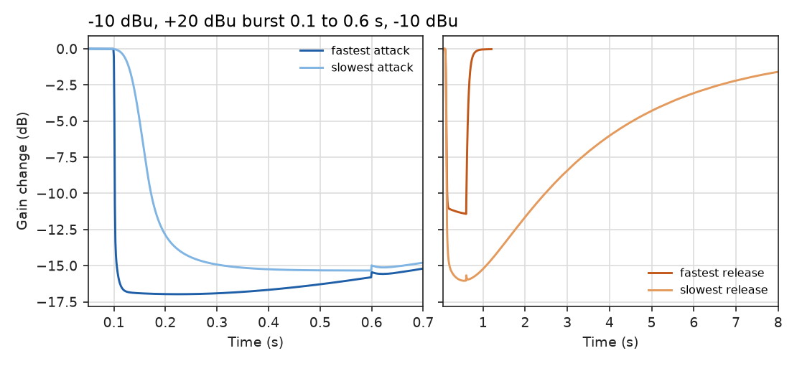
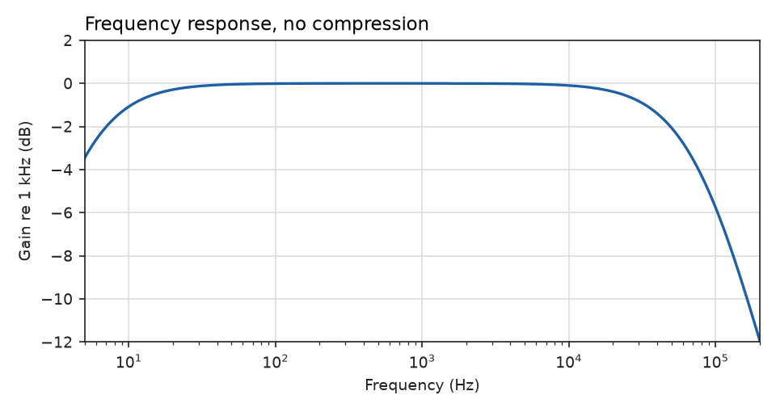
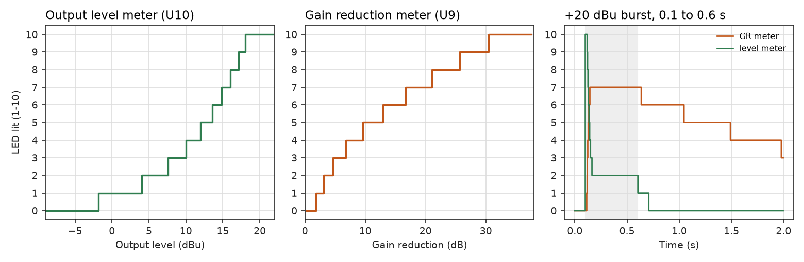

Practical
The simulation
Before any boards were ordered, the schematic was run in ngspice, the simulator inside KiCad. It works as a compressor, but it showed several of the values as first drawn were wrong. Fourteen parts changed, and the whole module was simulated again once the boards had been re-laid out for them.

How it was simulated
Straight from the seven-sheet schematic these pages document, so what was tested is what is
drawn. KiCad 10's kicad-cli exports the netlist and ngspice 42 runs it, the same
engine as KiCad's own Inspect → Simulator.
- Models. Philips' model for the BC549C, vendor models for the diodes, and a behavioural NE5532 with the real part's gain, bandwidth, slew rate, swing and current limit. TI's own NE5532 macromodel stalls the solver once the meter's peak detector swings. The LM3914 model, written for this design, has its reference, divider, ten comparators, dot mode and LED current sinks.
- Test bench. A text block on the root sheet supplies ±16 V, a
balanced 1 kHz source and a 10 kΩ load on each output leg. Every knob and switch is a
.paramfrom 0 to 1, so settings change without editing parts. - Tests. The DC operating point, an AC sweep, slow input ramps for the compression curves, a tone burst for attack and release, and distortion from an FFT. A second script ramps the output level and the gain reduction to find where each meter LED lights.
- Limits. The op amp model has no noise and no distortion of its own below clipping, so noise was not simulated and the distortion figures are the gain cell's.
Levels are balanced dBu at 1 kHz, with makeup at 0 and attack and release at half travel unless it says otherwise.
Against the targets
| As first drawn | Now | Target | |
|---|---|---|---|
| Gain at 1 kHz, balanced in to out | +5.8 dB | −0.1 dB | 0 dB |
RV1 trim range | +4.9 to +6.8 dB | +0.9 to −1.0 dB | Covers 0 dB |
| −3 dB points | 22 Hz, 60 kHz | 5.6 Hz, 60 kHz | 20 Hz to 20 kHz |
| Threshold, 1 dB of reduction | −9 to above +20 dBu | −21 to +19 dBu | −20 to +14 dBu |
Threshold per quarter turn of RV3 | −9, +14, then above +20 | −21, −10, 0, +10, +19 | Evenly spread |
| Most reduction, +22 dBu in | 22 dB | 36 dB | About 40 dB |
| Attack, fastest to slowest | 1 to 14 ms | 2 to 71 ms | 2.7 to 50 ms |
| Release, fastest to slowest | 20 ms to 0.44 s | 49 ms to 3.5 s | 47 ms to 2.2 s |
Resting steer, VREF5 | 94 mV, 3.60 V | 150 mV, 5.75 V | 150 mV, 5.49 V |
CTRL-B at most reduction | −4.5 V | −8.0 V | −10 V |
| Supply at rest, +16 / −16 V | 72 / 61 mA | 72 / 62 mA | About 60 mA |
What changed
Every miss traced to a component value, not to the circuit. No connections moved. The same
values are on the sheets, both boards and tools/design.py.
| Part | Was | Now | Why |
|---|---|---|---|
R21, R22 | 3k3 | 6k8 | Halves the recovery amp's gain: the module is unity and BYPASS matches (the sum) |
C9, C10 | 2u2 | 4u7 | With the larger R21/R22, the bass corner falls from 22 Hz to 5.6 Hz |
R36 | 100k | 82k | With R35 and RV3, sets the detector's gain range |
RV3 | 1M linear | 100k audio | Spreads the threshold evenly over the knob |
R35 | 20k | 1k | Sets the lowest threshold at about −20 dBu |
R38, C14 | 10k, 220n | 1k, 2u2 | Keeps the sidechain high-pass at 80–160 Hz; the small R35 had pushed it to 400 Hz |
R60 | 47k | 24k | Restores the 150 mV resting steer |
C22 | 47u | 4u7 | Stops the gain overshooting by up to 20 dB on a fast attack |
R47 | 4k7 | 15k | Fastest release near 47 ms; the release pot loads the detector less |
RV5 | 4k7 | 10k | The 9 mm pots Altronics stocks come in 10k, 100k and 1M |
RV6 | 220k | 1M | The same; slows the slowest release past 2.2 s |
Two things nobody expected
C22. It filters the steering reference for one side of the pair
only. When the control voltage pulled the shared reference down, that side lagged by about
60 ms, so the gain kept falling after the control voltage had settled: up to 20 dB of overshoot
on a fast attack. The static curves looked fine; only the burst test showed it. At 4.7 µF
the overshoot is about 1 dB.
R38 and C14. The small R35 that gives
the threshold its range also loads the sidechain high-pass filter, which pushed its corner from
80 Hz to 400 Hz at the lowest threshold. A 1 kΩ R38 makes that load minor at
every knob position, and a 2.2 µF C14 brings the corner back down.

Distortion
The point of a current-steering cell is that distortion stays flat as it compresses, and it does:
| Condition | Out | Gain reduction | THD |
|---|---|---|---|
| +4 dBu in, not compressing | +3.9 dBu | 0 | 0.008% |
| +4 dBu in, makeup at full | +24.7 dBu | 0 | 0.010% |
| +8 dBu in, threshold at ¼ | −5.9 dBu | 13.8 dB | 0.013% |
| +8 dBu in, threshold lowest | −15.5 dBu | 23.3 dB | 0.026% |
| +16 dBu in, threshold lowest | −14.7 dBu | 30.5 dB | 0.031% |
| +16 / +20 / +22 dBu in, not compressing | 0 | 0.033 / 0.057 / 0.079% | |
| +24 dBu in, not compressing | 0 | 6.2%, the input stage clipping |

What still misses
- 36 dB of reduction, not 40. The input stage clips at about +23 dBu on ±16 V, so 40 dB would need a threshold near −30 dBu. The target is better restated as 36 dB of usable reduction.
- The slow ends of ATTACK and RELEASE run long, 71 ms and 3.5 s against 50 ms and 2.2 s, because the pots are the values Altronics stocks. A 4.7 kΩ and a 500 kΩ from elsewhere give 34 ms and 1.8 s.
- Times depend on level. They are the time to 63% of the change in gain for a burst 20 dB over the threshold. Harder hits are faster.
- The ratio rises with level. With RATIO at the hard end the knee is soft: about 4:1 just above the threshold, 6:1 to 11:1 by 20 dB over. That is normal for a feedback design.
CTRL-Breaches −8 V, not −10 V. Set the gain-reduction meter'sRV7against a measuredCTRL-B.- Supply is about 72 / 62 mA at rest, a little over the 60 mA in the brief, and one lit LED in each meter adds about 22 mA on +16 V, about 94 mA in all. Still inside the rack's 130 mA.
The meters

With RV8 set for a top LED at +18 dBu, the level meter's ten LEDs light from
−1.8 to +18 dBu, closing up towards the top. With RV7 set for 30 dB, the
gain-reduction meter's light at 1.8, 3.1, 4.7, 6.8, 9.6, 12.9, 16.7, 21.1, 25.7 and 30.4 dB.
The meters page has both scales LED by LED.
Check by hand before ordering
On the usual convention pin 3 is the clockwise end of a pot. If that holds for these pots,
every knob turns clockwise for “more”: a harder RATIO (RV4's outer
pins are swapped for this), a higher THRESHOLD, slower ATTACK and RELEASE, and more MAKEUP.
A multimeter on one pot confirms which end is which.
Running it yourself
Open kicad/UTS Mini Mixing Desk - Compressor.kicad_pro in KiCad 10, then
Inspect → Simulator. A transient run of .tran 10u 0.6 0 20u or an AC
sweep from 10 Hz to 100 kHz both work; probe OUT_DIFF for the output and
CTRL-B for the control voltage. The knobs are the .param lines at the
bottom of the root sheet. tools/sim/run_all.py reproduces everything on this page
from the command line, in about an hour.
The full write-up, with every number and how it was measured, is kicad/sim/README.md in the compressor repository.